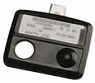
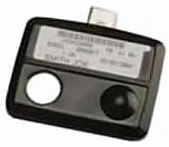
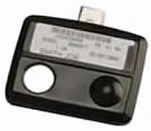
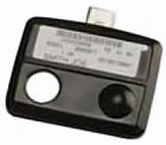

Diseño y caracterización de dosímetros MOS no convencionales
Ignacio Martinez
Director: Prof. Adrián Faigón
Laboratorio de Física de Dispositivos - Microelectrónica
Qué es la radiación?
Partículas que transportan energía

Efectos sobre tejidos y circuitos

Usos médicos
Diagnóstico y terapia

Usos industriales
Ensayos no destructivos
Dosis

Dosímetros

 

Radiación en dispositivos
Transitorios de carga

Defectos cristalinos

Radiación en Óxido de MOS
Irradiador

Funcionamiento

Espectro de la fuente
Actividad nominal: 100 mCi 
Simulación Monte Carlo
- Toolkit Geant4
- Configurado para simulación a bajas energías
- Geometría simplificada para acelerar simulación
Resultados
Dosis superficial de 20.3 mGy/año
Conclusiones
- Construímos un irradiador
- Calculamos que la dosis que escapa es segura
- El irradiador sigue en uso en el laboratorio
Construcción
- Proceso CMOS de 0.6 µm, 5 V
- 1 polisilicio, 2 metales
- PDK para Mentor

Cálculos Monte Carlo
Geometría simplificada

Cálculos manuales
Integral resuelta numericamente \[ \frac{dE}{dx} = -S(E) \] Valores de \( S \) tabulados por NIST
Exposición a luz visible

Ruido intra-disparo

Resúmen de características
| Sensibilidad |
7.1 V/Gy |
| Resolución |
2.0 mGy |
| Rango (por disparo) |
0.4 Gy |
Conclusiones
- Respuesta a luz visible es la esperada
- Mayores intensidades aceleran la descarga
- Estimación del ruido
Inyección

Cálculo de descarga
- Sensibilidad inicial extraída de medición
- Sensibilidad posterior calculada usando campo eléctrico en el óxido
- Tensión de FG es integral de sensibilidad en tensión
- Corriente de lector calculada con Spice
Curvas de carga: inyector
Curvas de carga: lector

Banco de medición durante descarga
Descarga con radiación

Tasa de dosis: 50 mGy/hr
Ruido
Resúmen de características
| Sensibilidad |
5.5-7 μA/Gy |
| Resolución |
4 mGy |
| Rango |
100 Gy |
| Tensión de cargado |
hasta ±16 V |
Conclusiones
- Inyección de carga
- Descarga con radiación
- Estimación del ruido
Uso de proceso CMOS estándar
- Tipo de circuito determina qué variables importan
- Circuito analógico normal: tox, Vt, Idsat
- Dosímetro: espesores de todas las capas, propiedades de interfaz Si-SiO2
- Conveniente adquirir más información del proceso
Conclusiones
- Construímos un irradiador
- Dosis en el exterior de 20.3 mGy/año
- Construímos un APS
- Calculamos sensibilidad de 7.1 V/Gy
- Mayores intensidades de luz aceleran su descarga
- Estimación del ruido: 2.0 mGy
- Construímos un FG
- Inyectamos carga aplicando hasta -16 V
- Medimos sensibilidad de 5.5-7 μA/Gy
- Estimación del ruido: 4 mGy
Biasing para Monte Carlo
- Concentrar tiempo de simulación en las partículas que escapan

Protección para ESD
- Diseñar protección compatible con tensiones de inyección
Minimizar corrientes de fuga
- Layout con guarda en nodos sensibles a fuga


 
